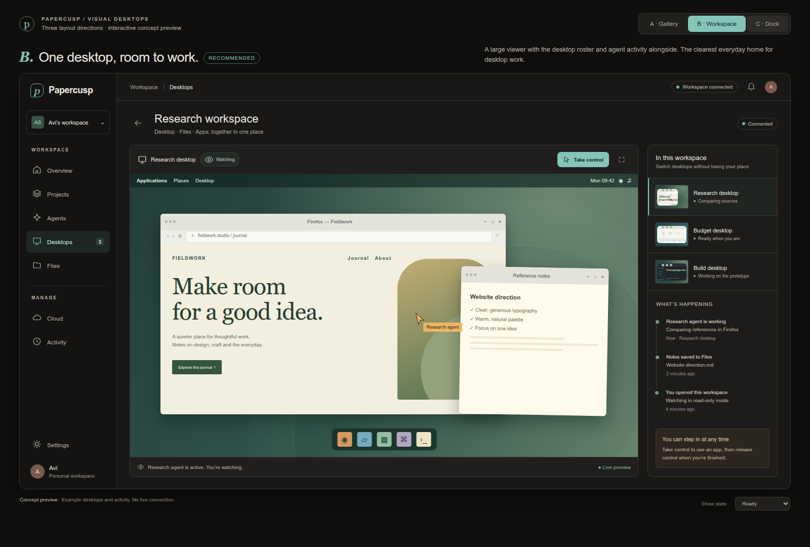

e61d5f12111e2485a5fc35b877f91be9b985f2e2811b49f2658f503ffc0d1a01Controlled component and actual viewer states with local WebSocket/ticket/RFB fixtures; real shell entry and real-service state remain separately recorded in the P-002 journey evidence. No live cloud/video/input claim. Author visually inspected all 20 final captures against the original selected option-B image (19 unchanged on final rerun; ready desktop dark re-inspected). Pixel comparison is not claimed for different state, theme or fixture content.
Machine-readable reviewed matrix · Raw browser observations
Actual workspace and viewer chrome with a local framebuffer. Large viewer and compact roster/activity preserve the approved hierarchy; real Take control/Release/Escape UI paths were exercised against synthetic transport. This proves controlled UI state, not remote input or video. Desktop layout keeps the roster beside a wider viewer. light fixture tokens; structural review only, not a calibrated pixel comparison to the illustrative reference.

e61d5f12111e2485a5fc35b877f91be9b985f2e2811b49f2658f503ffc0d1a01Actual workspace and viewer chrome with a local framebuffer. Large viewer and compact roster/activity preserve the approved hierarchy; real Take control/Release/Escape UI paths were exercised against synthetic transport. This proves controlled UI state, not remote input or video. Desktop layout keeps the roster beside a wider viewer. dark fixture tokens; structural review only, not a calibrated pixel comparison to the illustrative reference.

255a684b796a88b59a4120f8a16b85f70088bd48f7d310def89623f1249ca991Actual workspace and viewer chrome with a local framebuffer. Large viewer and compact roster/activity preserve the approved hierarchy; real Take control/Release/Escape UI paths were exercised against synthetic transport. This proves controlled UI state, not remote input or video. Narrow layout stacks the roster below the viewer and wraps its toolbar without horizontal overflow. light fixture tokens; structural review only, not a calibrated pixel comparison to the illustrative reference.

1711a745d1b7096466d56e9620dd098b6bd7b1ea9755b868ef1f2e6de2c43a55Actual workspace and viewer chrome with a local framebuffer. Large viewer and compact roster/activity preserve the approved hierarchy; real Take control/Release/Escape UI paths were exercised against synthetic transport. This proves controlled UI state, not remote input or video. Narrow layout stacks the roster below the viewer and wraps its toolbar without horizontal overflow. dark fixture tokens; structural review only, not a calibrated pixel comparison to the illustrative reference.

87fe96eafd00e21b1be2165bdc242a8cc093422bfde194e6e605cf53d68eb1b1Distinct empty-desktop message and empty roster/activity remain legible; refresh remains available in the controlled connected-but-empty fixture. Desktop layout keeps the roster beside a wider viewer. light fixture tokens; structural review only, not a calibrated pixel comparison to the illustrative reference.

968a0b2c3d1058f0ddb96151eaec21c7ee61f590356d95e1938059dcd88b1770Distinct empty-desktop message and empty roster/activity remain legible; refresh remains available in the controlled connected-but-empty fixture. Desktop layout keeps the roster beside a wider viewer. dark fixture tokens; structural review only, not a calibrated pixel comparison to the illustrative reference.

6a5aa7193ca096b5c9c0c0d3a62427333947149d3195c4f5328e3ac72dafaa0cDistinct empty-desktop message and empty roster/activity remain legible; refresh remains available in the controlled connected-but-empty fixture. Narrow layout stacks the roster below the viewer and wraps its toolbar without horizontal overflow. light fixture tokens; structural review only, not a calibrated pixel comparison to the illustrative reference.

fc2edba6b79f69b5c6e339fc47ec0c9be66a069a8d6d5dd00826f4254d6d6a41Distinct empty-desktop message and empty roster/activity remain legible; refresh remains available in the controlled connected-but-empty fixture. Narrow layout stacks the roster below the viewer and wraps its toolbar without horizontal overflow. dark fixture tokens; structural review only, not a calibrated pixel comparison to the illustrative reference.

07124df6099c69498436c03f39378fda76eba4e8800ec83543631cfbc64a4df0Loading copy appears in both viewer area and roster, with refresh disabled; no ready framebuffer or takeover control is presented. Desktop layout keeps the roster beside a wider viewer. light fixture tokens; structural review only, not a calibrated pixel comparison to the illustrative reference.

bd29a0b7264593b7576cb47f500b369a84efe5a29fd342d9555a29a078e5978aLoading copy appears in both viewer area and roster, with refresh disabled; no ready framebuffer or takeover control is presented. Desktop layout keeps the roster beside a wider viewer. dark fixture tokens; structural review only, not a calibrated pixel comparison to the illustrative reference.

66623900a9f18865a1e06de7e131a44e39d11472e0266e368f0a6fc4b691d46dLoading copy appears in both viewer area and roster, with refresh disabled; no ready framebuffer or takeover control is presented. Narrow layout stacks the roster below the viewer and wraps its toolbar without horizontal overflow. light fixture tokens; structural review only, not a calibrated pixel comparison to the illustrative reference.

433b5aa43f1511ac64b5004b054750d9d3350cea7befdddf499ad59466c45d7eLoading copy appears in both viewer area and roster, with refresh disabled; no ready framebuffer or takeover control is presented. Narrow layout stacks the roster below the viewer and wraps its toolbar without horizontal overflow. dark fixture tokens; structural review only, not a calibrated pixel comparison to the illustrative reference.

5eb8430acf1fc60f74930056b153865d38571aa56e47bb19ad6baa4f0f2b2d3cDisconnected status and connect-workspace message remain explicit; refresh and takeover are unavailable. Desktop layout keeps the roster beside a wider viewer. light fixture tokens; structural review only, not a calibrated pixel comparison to the illustrative reference.

5093f4babbb6a01096ed2786e1d05f96d028fa57daede5626f73e9bb0b468ed2Disconnected status and connect-workspace message remain explicit; refresh and takeover are unavailable. Desktop layout keeps the roster beside a wider viewer. dark fixture tokens; structural review only, not a calibrated pixel comparison to the illustrative reference.

ac7781d9d261a6ef9a30cb9632eff803f445f285563b48310628778fc7b16fb0Disconnected status and connect-workspace message remain explicit; refresh and takeover are unavailable. Narrow layout stacks the roster below the viewer and wraps its toolbar without horizontal overflow. light fixture tokens; structural review only, not a calibrated pixel comparison to the illustrative reference.

b7b72be329356ff16c3c99a56d58172c6a4fcfec44dc7de57baf67ba28fc5ab1Disconnected status and connect-workspace message remain explicit; refresh and takeover are unavailable. Narrow layout stacks the roster below the viewer and wraps its toolbar without horizontal overflow. dark fixture tokens; structural review only, not a calibrated pixel comparison to the illustrative reference.

e0bbc4db591c61e0d62db320d3a584adf97ab5dfe5a76674d024b58608b992b0Roster failure is visibly distinguished by an alert and error message; retry remains available, with no ready framebuffer or takeover control. Desktop layout keeps the roster beside a wider viewer. light fixture tokens; structural review only, not a calibrated pixel comparison to the illustrative reference.

5743299dd1e4c897c1e701d3378d8a3312286fa2518183bc5236949c7cb341daRoster failure is visibly distinguished by an alert and error message; retry remains available, with no ready framebuffer or takeover control. Desktop layout keeps the roster beside a wider viewer. dark fixture tokens; structural review only, not a calibrated pixel comparison to the illustrative reference.

bbeb62cada6c4a51eebeacfe4299e06b2e0b6278fd59addb94878621290cd3fdRoster failure is visibly distinguished by an alert and error message; retry remains available, with no ready framebuffer or takeover control. Narrow layout stacks the roster below the viewer and wraps its toolbar without horizontal overflow. light fixture tokens; structural review only, not a calibrated pixel comparison to the illustrative reference.

eb9363f25cae35fb1e3ec28468231f9173720e85f601153614168511e59f043fRoster failure is visibly distinguished by an alert and error message; retry remains available, with no ready framebuffer or takeover control. Narrow layout stacks the roster below the viewer and wraps its toolbar without horizontal overflow. dark fixture tokens; structural review only, not a calibrated pixel comparison to the illustrative reference.

eb2c6a3d5d2a04b10a6334177f0ff87bd900af415b2a496ae060cfcdb7275097Original clean-entry capture shows Cloud Workspaces and lacks the Desktop workspace. Repaired real portal has the required large viewer placeholder and roster/activity at 1440, stacked/reachable at 390. Neither real capture is ready or connected.